O evento é o mesmo, a dor de cada um é diferente. Em vez de um anúncio genérico para todo mundo, a gente recorta a mensagem por persona: o que move, o ângulo que fala com ela e a chamada certa.
Pegamos as duas melhores copies que já estão no ar - a do corporativo e a de expositores - e mesclamos o que cada uma faz de melhor numa estrutura só. Esta é a fórmula que o time usa pra montar qualquer ad.